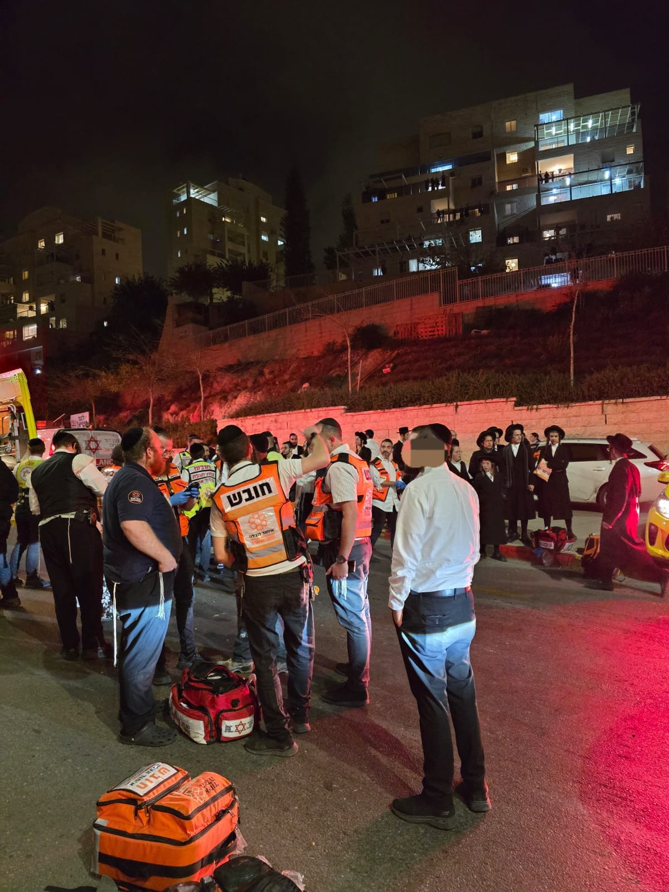

90 sec
temps d’intervention dans les grandes villes pour apporter les premiers soins au plus vite.
L’impact de United Hatzalah ne se mesure pas seulement en chiffres. Il se mesure en vies stabilisées, en urgences prises en charge plus vite, en familles rassurées, en victimes secourues à temps et en capacité d’agir lorsque tout bascule.
Ces chiffres ne sont pas décoratifs. Ils illustrent la capacité de United Hatzalah à être présent, réactif et utile au moment où chaque seconde compte.
temps d’intervention dans les grandes villes pour apporter les premiers soins au plus vite.
bénévoles mobilisés, formés et répartis sur le terrain pour répondre aux urgences.
de disponibilité opérationnelle pour intervenir de jour comme de nuit.
interventions réalisées pour secourir, stabiliser et sauver des vies.

La force de United Hatzalah est de pouvoir compter sur des équipes proches du lieu de l’urgence. Cette présence permet une réaction extrêmement rapide, décisive dans les premières minutes d’un malaise, d’un accident, d’une attaque ou d’une situation critique.
Gagner quelques minutes peut éviter une aggravation, limiter les séquelles, permettre une meilleure stabilisation et offrir de meilleures chances de survie avant même l’arrivée des secours lourds.
L’arrivée rapide des secouristes permet d’apporter les premiers gestes médicaux dans les premières minutes, là où ils ont le plus de valeur.
Une victime stabilisée plus tôt est une victime qui a plus de chances d’arriver dans de meilleures conditions aux mains des secours lourds ou à l’hôpital.
L’impact est aussi humain : présence immédiate, prise en charge, réassurance des proches et gestion du chaos dans les premiers instants.
Dans une urgence, la rapidité ne se résume pas à un chiffre. Elle se traduit par une présence immédiate, une première prise en charge, une organisation déjà en mouvement et une victime qui n’attend pas seule.
Cette page n’a pas vocation à afficher seulement des statistiques. Elle montre que l’impact d’une organisation de secours se mesure aussi dans les drames évités, les réponses plus rapides et les vies qui basculent dans le bon sens parce qu’une équipe a pu intervenir au bon moment.
En soutenant United Hatzalah, vous contribuez directement à maintenir un niveau de préparation, d’équipement et de présence terrain qui permet d’agir immédiatement lorsque l’urgence frappe.
Pour se rendre au plus vite sur le lieu de l’intervention avec le bon matériel.
Pour traiter, stabiliser et prendre en charge la victime dès les premières minutes.
Pour maintenir des bénévoles prêts, compétents et opérationnels à toute heure.
Pour renforcer la présence des équipes là où les urgences exigent une réponse immédiate.
Votre don permet à United Hatzalah de continuer à intervenir vite, à rester présent sur le terrain et à apporter une réponse concrète dans les moments les plus critiques.